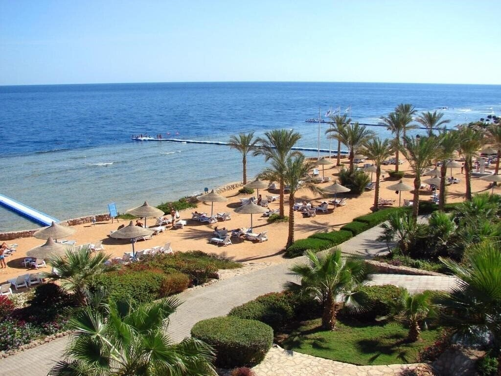

Подорожі — це не лише відвідування нових місць, а й знайомство з іншими культурами, кухнею та людьми.
Пляж, гори, історичні пам’ятки чи культурні заходи — кожен знайде щось для себе. Це чудовий спосіб розширити світогляд і насолодитися красою світу.
Подорожі дарують спокій, нові емоції та натхнення. Незалежно від мети — романтика чи пригоди — світ відкритий для відкриттів.
Дослідження нових місць дає змогу знайти натхнення, а також зрозуміти цінність культурного різноманіття. Незалежно від того, куди ви вирушаєте – чи то в далеку країну, чи в сусіднє місто, важливо відкрити для себе все нове та цікаве. Путівник допоможе вам спланувати подорож і вибрати найкращі маршрути для вашого наступного відпочинку.
| Україна | Іспанія | Єгипет | Франція |
|---|---|---|---|
|  | |||
| Буковель | Барселона | Шарм ель Шейх | Париж |
| Гірськолижний курорт в Карпатах. Буковель - це найкращий гірськолижний курорт України, розташований в Карпатах, в Івано-Франківській області. Відмінно підходить для любителів зимових видів спорту. Тут можна покататися на лижах, сноуборді, а також відпочити в численних готелях та ресторанах. Курорт приваблює туристів не тільки взимку, але й влітку, пропонуючи чудові пішохідні маршрути та можливість насолоджуватись природою Карпат. | Барселона - столиця Каталонії, однією з найпопулярніших туристичних зон Європи. Тут чудові піщані пляжі і купальний сезон з квітня по жовтень, відмінні готелі і величезна кількість екскурсій, - просто середземноморський рай для любителів історії, контрастів, яскравих пейзажів, моря, сонця і активного відпочинку. Барселона поєднує в собі європейську елегантність і південну жвавість: чудові пальмові алеї, вишукані ресторани, безліч кафе і магазинів, майже два десятка музеїв, величезний парк Гуеля та багато іншого. | Курорти Червоного моря, такі як Хургада і Шарм ель Шейх, привертають туристів своїми пляжами з білосніжним піском, яскравими кораловими рифами і теплим морем. Плавання з маскою, дайвінг, сноркелінг – це саме те, чим можна зайнятись під час відпочинку. Крім того, ці курорти мають багатий історичний спадок, такі як храм Абу-Сімбел і піраміди в Гізі. | Париж – це місто, яке захоплює з першого погляду. Відвідайте Ейфелеву вежу, Лувр, Собор Паризької Богоматері, а також насолодіться прогулянкою по Сені. Франція також знаменита своєю кухнею, виною, стильними магазинами та культурними заходами. Париж має безліч парків і садів, де можна відпочити, а також вражаючі бульвари з магазинчиками і кафе, де завжди приємно провести час. |